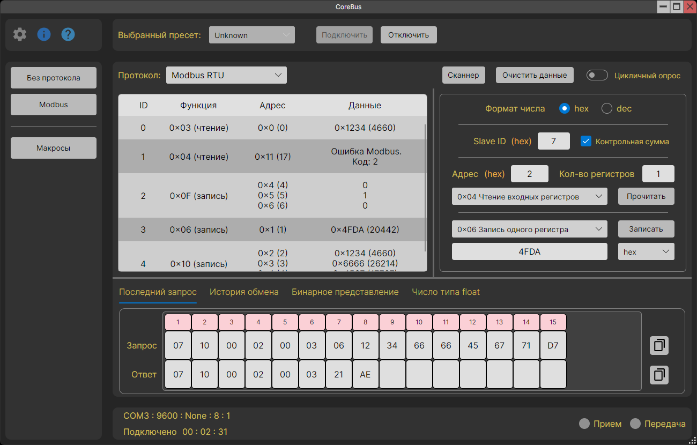

CoreBus
CoreBus — кроссплатформенный терминал для работы с COM-портами и TCP-сокетами с поддержкой протоколов Modbus TCP / RTU / ASCII.
Основные возможности приложения:
- Два режима работы: "Без протокола" и "Modbus".
-
"Без протокола":
- Работа с данными в строковом или байтовом формате.
- Поддержка разных кодировок.
- Три режима отправки: одиночная, цикличная, отправка файла.
-
"Modbus":
- Поддержка различных вариаций протокола Modbus: TCP, RTU, ASCII и RTU / ASCII over TCP.
- Удобная работа с функциями записи.
- Возможность работы с числами типа float.
- Возможность работы с бинарными данными.
- Цикличный опрос.
- Modbus сканер, который осуществляет поиск устройств на линии связи.
-
Макросы:
- Отдельные макросы для каждого режима работы.
- Макрос состоит из неограниченного количества команд (действий).
- Для Modbus макросов предусмотрена возможность выставления общего Slave ID для всего макроса.
- Импорт и экспорт макросов.
- Темная и светлая темы приложения.
- Пресеты с пользовательскими настройками.
- Кроссплатформенность: Windows, Linux.
Приложение тестировалось на Windows 10/11, Ubuntu и Astra Linux Common Edition.